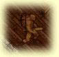
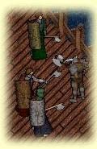
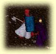
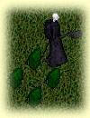
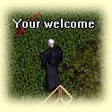
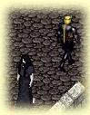

This article was originally written in May of 1996. It was intended for web publication but never made it for a variety of reasons. I thought that as the beta looms closer, now would be a good time to recall the second alpha test that took place during last year's E3.
All of the inset pictures you see on this page are links to larger screenshots right from the game.
On May 7 1996 I received mail confirming what a lot of previous Ultima Online testers had been waiting for - resumption of pre-alpha testing for Origin Systems' first online venture.
For those not in the know, Ultima Online is Origin's attempt to expand the Ultima world into a universe that can be accessed by potentially thousands of people at once, allowing interaction and role playing very much like what individual players have been experiencing for fifteen years in their popular Ultima series. Release date is expected to be around December 1996, but may very well be later depending on progress made in the coming months.
The testing that happened from May 13-19 was pre-alpha in nature, and in no way is this article meant to be a review of what is at this time in a very preliminary state. Rather, it is meant to provide an inside glimpse of the testing process and what can be expected from the game once it is released.
Prologue
Since the previous testing many guilds were established. I made a choice not to immediately join a guild, but to instead build some character skills. Once at a sufficient level I would be in a much better position to choose my allies. These guilds were established as a loose alliance of friends, but also served a more deadly purpose - the hunting down and extinguishment of dreaded Player Killers who take out their aggression on the weak.
One interesting development carried over from the last test is the occupation of the IRC #Ultima channel on Efnet. I have mixed feelings about this; while it is a great way to play the game, it offers a means of communication that players not logged into IRC cannot use. A player on one end of the map can communicate to someone in an entirely different area their intentions to meet, or to ambush a player killer. Regardless of the ethics involved, I decide to avail myself of this resource during testing.
I logon for the first time at around 6pm. Unfortunately, the one server operating for this test was jam packed - there were people all over the map, and the basic newbie fodder, bunnies, were in short supply. PredatorX eased my burden somewhat by donating some used armor to my cause, but the problem of no weak monsters available means that low-level stat building will be very tedious indeed. I decide to have an early night and get a very early start on the game, when hopefully most people will still be asleep and the rabbits have had a chance to regenerate.
I rise at 5am to begin a full day of statistics building. It soon becomes clear that others have been busy throughout the night - I learn that Ishamael has already reached level 30, and furthermore five people have already acquired the fire wand (the most powerful weapon in the game) from the Quest area. To make matters worse, the Quest area is broken - a critical switch is missing right now, making more fire wands an impossibility. I resign myself to killing rabbits, deer and wolves until this can hopefully be fixed later in the day by Origin QA.
Luckily the server is less crowded this morning, and I begin killing rabbits and deer. I quickly move on to wolves, but it is dangerous going. The orcs, orc captains and skeletons have multiplied and it is quite common to find them wandering the same fields as the lesser animals.
About mid-day we receive some unfortunate news. The Quest area is being closed down and anyone who has acquired a fire wand is being asked to give it back. I was ready to go get mine, but now it seems as if I'll never get one this time around. The fire wand is special in that it lets you attack and kill creatures from a distance. It is a great experience builder once you have enough experience to withstand the monsters that guard it.
I end the day with my level in the mid-20s. I had been vowing to reach level 30, but without the fire wand it would be difficult. The only other significant news is that there is a player killer named Seraph still running around with a fire wand.
The morning goes smoothly enough, and I gain three or four levels. However, after an hour or so it becomes clear that there are too many bands of roving hunters to do much stat building so I decide to take a break for a couple of hours.
I log back on later to find that many things have happened. Because the purpose of this test is for a demonstration at the E3 trade show, the powers that be have decided to do some balancing by playing with our the game mechanics. First and foremost: everyone whose level is over 10 has had it set back to 10. Second, the three main statistics, strength, dexterity and intelligence, have been "capped" and can no longer increase higher than 100. Third, the fire wand has been altered so that anyone using it kills themself and heals their opponent.
These changes have made many people very upset, especially those who have gone without sleep for a couple of nights in order to build their statistics to a monumental level. I remind myself that the purpose of this is to do Origin's bidding for the E3 audience, but it doesn't do much to lessen the sting of losing 17 levels in the blink of an eye.
About mid-day, KyserSoze and Tasslehoff summon me in IRC, directing me to a point to the far west of the map. It seems they have slipped through a loophole somewhere and found themselves outside of the playable map area. This is a one-time occurrence, caused by the programmers removing one wall while they were inside the Quest area. They brag about all the interesting things they've seen outside the yellow barriers that surround the world, including a half finished temple and some walls that they can pick up and drag around.
Once again I log on early. Not much is going on due to the re-adjustment of balance and having levels capped. I decide to hang out on the Bridge of Death for a while with Dr Atomic and Gambit. After a while we are joined by members of Rev. Brucifer's guild and we block the entrance to the bridge just for fun. This doesn't last long so we decide to cover the bridge in fish.
Later, Lady Whisper informs me via IRC that somebody named Kev was shooting fireballs at her from the top floor of an inn while she was attempting to sell some hams she collected from slain animals. Vigilante justice plays a large part in the game right now, so I decide to go investigate. Sure enough I find Kev on the top floor of the inn, killing NPCs for experience. I ask him about the situation with Lady Whisper and he says that he was "just trying out the magic". I tell him that next time he should try healing people instead of killing them, and promptly whack him down to nothing. I catch up with his reincarnation at the temple and tell him that if he hurries he can get his stuff from his dead body, and not to shoot fireballs at players again. He agrees.
Tasslehoff and KyserSoze inform me that they are going to do something "interesting" to bald-headed Lothar. We all meet at the temple, and Tasslehoff says "Okay Kyser, are you ready?". Then, through some trickery, they throw some hair onto Lothar - bright blonde hair in fact. It must have done the trick since Lothar immediately hates it and starts begging for it to be removed, which it can't be unless a programmer or QA stops by. It seems KyserSoze and Tasslehoff found some spare hair yesterday while exploring outside the barrier.
In a little while Grimli, an Origin programmer, shows up and starts showing off some interesting tricks for the crowd. He changes himself into an orc captain, a skeleton, and then a skeleton with hair (to cries of Kate Moss! Kate Moss!). Then he demonstrates how he can pull the hair right off of our heads, and bestows on me a special gift - blue hair that I will wear through the end of the game. 
In the evening as I'm just hanging out near the Temple, Tasslehoff and I see an orc with a backpack walk by. An orc with a backpack? This is obviously one of the QA people. We follow this creature for a while, but eventually lose sight of him, as he's moving much too fast.
From here I make my way to the Bridge of Death, the bridge that leads west out of town into the killing fields, so named because so many new players die shortly after crossing it. There is a crowd of maybe twenty people there, so I stop to see what is going on. There is at least one QA or programmer there, and everyone is begging for more of a challenge. We do not have to wait very long for this. Pretty soon some Orc Lords, similar to Orc Captains but far more powerful, start to appear. Also mixed in are a few Skeleton Lords (invisible except for their shields and scimitars) and one hellhound. This proves to be a huge challenge for the crowd, and pretty soon we're having trouble keeping up with the number of monsters that are flooding in. At one point I see no fewer than eight Orc Lords respawn at once, far more than anyone can handle. Luckily this tide of monsters is held back and eventually stopped, and when the slaughter is over there are twenty or thirty bodies left on the ground. I escape with my life, but with almost no mana left from healing myself repeatedly during combat.
Shortly after this comes the news that Green Knights and Black Knights have been put back in the game following their removal yesterday. There is an immediate rush to kill these and collect their armor, which is the only colored armor legitimately available in the game. I kill a couple of green knights but let others take the armor.
Evening brings the threat of more player killers, this time a gang of three named Spanki, Hammi and Lentil. I catch up with Hammi at the temple and attempt to kill him, but something strange is wrong. While he doesn't take much damage when I'm hitting him, when he heals himself his health bar jumped about one quarter of the way each time. It turns out that these three players have exploited a little-known bug that allows you to gain very very high dexterity simply by dying at the appropriate time. Several of us hack on Hammi, and Spanki who shows up later, but it soon becomes apparent that even killing them won't do much good, as their stats only decrease by a tiny amount when they die.
The evening ends with a report of Lord British perhaps making an appearance (as he did during the last test period), but this all turns out to be rumor.
The afternoon rolls slowly by when a report of more Orcish Lords in the bardic conservatory comes through. Several of us go to check it out and are overwhelmed - some Origin person with a sense of humor has dumped about fifteen of them into the area. There are about eight or nine of us to try to clear things up, and just as it looks like we might be victorious they start to respawn! They aren't respawning just in the conservatory this time, but also in the mage tower a block or two away. I help dispatch ten or so, but eventually have to back off and take some time to heal.
Later, news comes that anybody in the game with "special" attributes is going to be reverted in order to make everyone more equal. I'm not surprised to see my blue hair disappear shortly afterward. Luckily Grimli left my normal hair in my backpack, so I put that back on and go back to using a helmet.
The day passes, and in the evening a war starts to develop. There are two factions, one loosely aligned with good and the other somewhat evil. I decide to join the evil factions, simply because I know more of them. We meet at a farmhouse west of the Bridge of Death to plan our attack.
It is decided that we need to identify ourselves so that we don't inadvertently kill each other. The first idea is to remove our vambraces so that we have bare arms, but this proves too difficult to see, so we settle on removing our pants. So there we are, about fifteen pantsless marauders marching to the castle, killing everything that we encounter on the way.
The castle encounter comes and it is a sight to behold. Unfortunately the game runs very slow when so many people are engaged in combat on the screen, so it is difficult to keep healed during the battle. I vanquish three or so of the enemy and start hunting down the stragglers, but unfortunately they turn out to be cowards and run away in order to save their skins. DragonSlayer even goes so far as to log out rather than be killed.
The last conflict of the day are a group of five standing on the forest side of the Bridge of Death, led by Kwakka and DCEngr. It seems that they offer anyone who crosses the bridge a choice - join them or die. When I refuse to join, they gang up on me. I hold my ground for as long as I can, but I have to back off and heal eventually. Rainz and Tasslehoff catch up to me and help me out so that the battle is not so one-sided, and succeed in killing DCEngr a few times. Kwakka, unfortunately, turns out to be a coward and runs away and logs off several times.
With boredom starting to set in, I decide to make sure I've seen everything on the map. Some of us notice that in the beta map of the city there is a little circle in the southeast, so we head off to explore. We find the area entirely fenced in, yet NPCs can walk through this fence. This remains a mystery until later - when we find out that the area was fenced in by the programmers because it was unfinished. 
Some time around midday a medium sized herd of orc captains is released into the city. The stronger players manage to contain it just fine, but many of the weaker players are killed. This is nothing compared to the evening, though. Hades and Thanatos (both from Origin) are online most of the evening, and they are throwing monsters here and there. Finally, they drop Orc Lord generators seemingly all over the map. Thus, while players are trying to contain them in the usualy places, like the orc camps outside of town, they are also running amok through the city, killing players and NPCs alike. This is by far the largest invasion of Orc Lords yet seen.
I decide to spend some of this time in the Temple to heal. I am amazed that freshly-dead players are respawning here about five or six per minute, and this goes on for a good while.
During this time there has been a player killer running around named Lenny. This Lenny is somewhat of a mystery, because none of the more experienced players who have been around all week have seen him before, yet he is incredibly strong. One of the Origin people look at his stats to find that he has over 900 hit points, much higher than anyone else. We believe we have caught another cheater or stat hacker (a difficult task because all data resides on the server), but there is no way to prove it.
Before the Origin staff leave for the night they announce a tournament tomorrow at the Castle. What exactly the tournament would involve is kept a secret, but the prizes will be coveted sets of colored armor. This is not much of a surprise, as people have been coveting the armor worn by the Origin staff since the day the test started.
The tournament takes place in the afternoon. All of us are wondering what it is to be while we're gathering at the Castle. Hades announces that it will be a tournament of skill and strength, and we gather at Lord British's rabbit pen for the games. 
The rules are simple. Two players fight, the winner gets a set of coveted colored armor in the color of their choice. It is up to the players to decide who they want to fight with, and to find someone who is at about the same level. After the first couple of matches no healing is allowed. I take on Jagmas, who is at about the same level as I am. 
We begin our bout and I immediately take a few hits because I'm not in combat mode when he starts hitting me. Things are looking grim toward the end of the fight and I think I will be beaten, when the server crashes. We start again after the server is back up and I win this time, taking blue armor as my prize. Before I get my armor I'm transported to a place off the regular map where Tasslehoff and Hades are arranging pack upon pack of colored armor.
Later, DrAtomic challenges me to a duel for his armor. Having gotten my armor I decide to remove my helmet and gorget in order for the fight to be fair (I have a few more hit points than he does). This does the trick and he earns his armor.
The evening brings another onslaught of Orcish Lords, but I only fight with them a little while. Mostly I'm paranoid about losing my armor, and also it doesn't see worthwhile since they are so difficult to kill but you get so little experience for it.
I decide to spend this last day finding out how to get beyond the yellow barriers that surround the Ultima Online world. I have heard lots of rumors about how it is done, and also some plain misinformation, but finally I run into somebody actually trying to get back in from the barrier, so I find out how to do it. You run towards the northwest corner of the fence and exit just as you hit the corner. If your timing was right, when you log back in you should be on the other side. It takes me about ten tries to get it right, but then I'm over.
Before doing anything I remove my blue armor. It is very likely that I might get killed or stuck out here and I don't want to lose my armor. I wander around for some time, finding the Quest area from last time and a great deal of empty space. After talking with someone who has already been over the fence I head to the far northwest, where I find a coupple of mostly completed buildings. While I'm here several Skeleton Lords pop up. It turns out that Hades is dropping monsters into the areas up there to make things more interesting for us. I just ignore them for now because I'm mostly interested in getting screenshots. 
Further to the northwest I start finding bits and pieces of the world laying around. There seems to be one of everything in the area, almost like a palette of objects from the game. I also meet up with DrAtomic up here, and Hades pops in to make sure we're doing okay.
After getting a lot of pictures I start trying to figure out how to get back. Doing the same trick to get back is somewhat more difficult (perhaps because you can't get as close to the corner from outside), so I find some Orcish Lords and let them kill me. 
About an hour before time to close rumors start to come in that Lord British may be making an appearance at the castle. By the time I make it up to the castle there are already about 40 people there, and this quickly fills out to more than we had for the finale of the first test. Sure enough Lord British comes walking out atop the castle. Well, it isn't really Lord British, but Grimli disguised as Lord British. He thanks us for testing once again and then releases a horde of Orcish Lords into the courtyard to take care of us all. His last words are "Fortunis Fortuna Avatari". Then the server dies and this test is over.
Many things came out after the test that were unknown at the time. Squeege was actually an evil character being played by Hades, one of the Origin people. PredatorX hacked his client program in order to get higher statistics. And Rainz did not legitimately get his first fire wand - he fireballed someone else who had one.